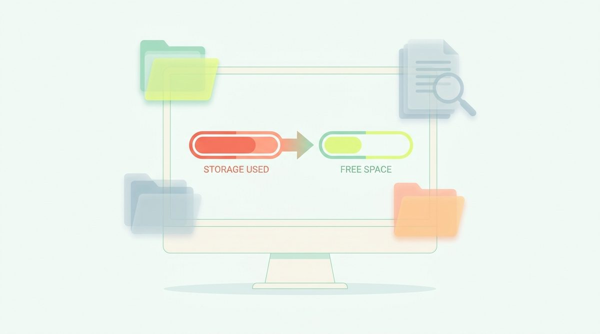
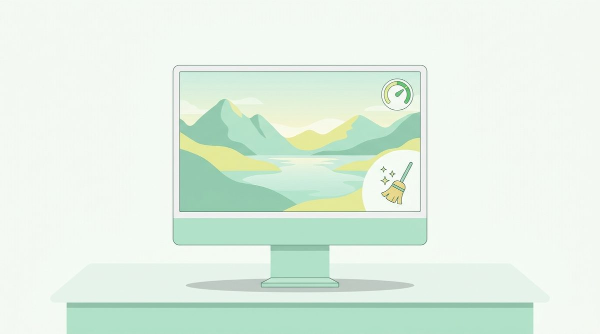

/ blog
Honest guides to Mac storage.
Where your space actually goes, what's genuinely safe to delete, and what to leave alone. No scare tactics, no inflated numbers — just the paths, the byte counts and the reasoning. Short answers in the FAQ.
MacBook Neo Storage: How Much Do You Need? (2026)
Buying a MacBook Neo in 2026? Here's how much storage you actually need, what macOS and Apple Intelligence take first, and how to live with the base tier.

Mac Freezing or Crashing After Cleaning Storage? Here's Why
Cleaned up your Mac and now it freezes, crashes or apps misbehave? Here's what usually went wrong, how to fix it, and what's actually safe to delete.
Mac Cleaner Without a Subscription: One-Time & Free Options
Tired of monthly fees for a disk cleaner? Here are the genuinely subscription-free ways to clean a Mac in 2026 — free tools, one-time purchases and manual methods.
How to Vet a Mac App Before You Install It (2026 Checklist)
With AI-generated apps flooding the Mac scene in 2026, here's a practical checklist for vetting any Mac app: privacy policy, notarization, permissions and telemetry.
How to Find and Remove Duplicate Files on a Mac
Duplicate photos, downloads and documents quietly eat gigabytes. Here's how to find duplicates on a Mac safely — with Finder, Photos and Terminal.

How to Move Your Photos Library to an External Drive (Mac)
Your Photos library is probably the biggest thing on your Mac. Here's how to move it to an external SSD safely — and the pitfalls to avoid.

Mac Storage Not Updating After Deleting Files? Here's Why
Deleted gigabytes but the storage bar hasn't moved? Here's why macOS reports stale numbers, and how to make free space show up correctly.
macOS Tahoe vs Sequoia: Storage Differences (2026)
Should you upgrade to macOS Tahoe, and what does it mean for disk space? Here's what changed for storage between Sequoia and Tahoe in 2026.
What Reddit Actually Recommends for Mac Cleanup (2026)
Reddit's Mac communities are split on cleaner apps. Here's what they actually recommend in 2026 — the manual methods, the trusted tools, and the red flags.
Mac Mini Storage in 2026: How Much Do You Need?
Mac mini configurations shifted in 2026. Here's how much storage to buy, what macOS takes first, and how to expand cheaply with external drives.
256GB vs 512GB MacBook: How Much Storage Do You Need? (2026)
Deciding between 256GB and 512GB — or stuck with a full 256GB Mac? Here's how much storage you actually need in 2026, and how to make 256GB work.
Clear Adobe Cache (Photoshop, Premiere, Lightroom) on a Mac
Adobe apps hoard media caches, previews and temp files — often tens of gigabytes. Here's how to clear them safely and free space on a Mac.
Android Studio & Gradle Are Eating Your Mac's Disk (2026)
Gradle caches, the Android SDK and emulator images routinely total 20–60 GB on a Mac. Here's what's safe to clear and how to reclaim the space.
How to Wipe & Clean a MacBook Before Selling (2026)
Selling your MacBook? Here's the safe order: sign out of your accounts, back up, then Erase All Content and Settings — plus how to clear it out if you're keeping it.
How to Clear Safari Cache & Website Data on a Mac
Clear Safari's cache and website data to fix glitches and free space on a Mac. Here's the safe way — and what you'll lose (almost nothing).
Final Cut & DaVinci Resolve Eating Your Mac's Disk (2026)
Render files, optimized media and caches from Final Cut and DaVinci Resolve can total hundreds of gigabytes. Here's what's safe to delete and reclaim.
How to Clean Up Homebrew and Free Space on a Mac
Homebrew quietly hoards old versions and cached downloads. Here's how to reclaim the space with brew cleanup — and how much you'll typically get back.
How to Find and Delete Large Files on a Mac (2026)
Three ways to find the biggest files on your Mac — Finder, the Storage settings, and Terminal — plus the missing piece: knowing which ones are safe to delete.
The Complete Mac Storage Cleanup Checklist (2026)
A step-by-step Mac cleanup in order of safest-and-biggest wins — caches, Trash, developer junk, snapshots, then personal files. Everything before “review” is safe.
The Best Way to See What's Taking Up Space on a Mac (2026)
macOS hides most of your storage in “System Data.” Here's how to actually see what's taking up space — and, crucially, what you can safely reclaim.
What Is “Other” Storage on a Mac — and How to Clear It
“Other” storage (now called System Data) can swallow 50GB or more. Here's exactly what's in it and which parts you can safely clear on a Mac.
Startup Disk Almost Full on Mac? How to Fix It Fast (2026)
Got the “Your startup disk is almost full” warning? Here's how to reclaim gigabytes fast and safely — caches, Trash, developer junk — and stop it coming back.
Mac Won't Update Because Storage Is Full? How to Fix It Fast
macOS needs 20GB+ free to install an update. Here's how to free enough space fast so your Mac can update — without deleting anything important.
MacBook Air Storage Full? How to Free Space (2026)
A 256 GB MacBook Air fills fast — macOS and Apple Intelligence alone take 20–30 GB. Here's how to reclaim space safely and keep it from filling again.
Messages Taking Up Space on a Mac? Clear iMessage Attachments
iMessage saves every photo, video and GIF you've ever received. Here's how to find and clear Messages attachments and free real space on a Mac.
Photos Library Taking Up Space on a Mac: What to Do
Your Photos library is often the biggest thing on your Mac. Here's how to shrink its footprint honestly — with iCloud, offloading and cache cleanup.
Reclaim Disk from pip, conda and Python Caches on a Mac
Python tooling caches add up fast — pip, conda, __pycache__ and the Hugging Face cache. Here's how to clear the safe ones and reclaim gigabytes on a data/ML Mac.
Spotlight Indexing Eating Disk or CPU on a Mac? How to Fix It
Spotlight (mds, mds_stores) can spike CPU and disk after an update. Here's why it happens, how to check it, and how to safely rebuild the index.
How to Delete Time Machine Local Snapshots on a Mac
Time Machine keeps hourly local snapshots on your internal disk. Here's what they are, how to view and thin them, and why macOS usually handles it for you.
VS Code & Cursor Disk Usage on a Mac: Cache & Extensions
VS Code and Cursor accumulate caches, logs, extensions and workspace storage. Here's what's safe to clear to reclaim space on a developer Mac.
The Best Free Mac Cleaner in 2026
The genuinely free ways to reclaim disk space on a Mac in 2026 — what each covers, where the limits are, and when free is all you actually need.
The Best Mac Cleaner Apps in 2026
An honest, category-by-category look at the best ways to reclaim disk space on a Mac in 2026 — from free manual methods to focused tools and full suites.
The Best Mac Cleaner for Developers in 2026
Developer Macs fill up fastest. The best 2026 approaches to reclaim the tens of gigabytes hiding in Xcode, node_modules, Docker and local AI models.
MacCleaner vs CleanMyMac: Which Fits You? (2026)
A fair 2026 head-to-head: MacCleaner's focused, trust-first storage cleanup versus CleanMyMac's all-in-one maintenance suite — and how to choose.
MacCleaner vs DaisyDisk: Map or Clean? (2026)
DaisyDisk shows where your space went with a beautiful disk map; MacCleaner classifies what's safe to remove and cleans it. How they differ in 2026.
Living With a 256 GB MacBook in 2026: A Survival Guide
Base MacBooks still ship with 256 GB in 2026, and macOS plus Apple Intelligence claim a chunk first. Here's how to make it work without the panic.
Why Apple Intelligence Is Using Gigabytes on Your Mac (2026)
Apple Intelligence downloads on-device AI models that can occupy 7 GB or more. Here's where that space goes in 2026, whether you can reclaim it, and how.
Docker and OrbStack Disk Bloat on a Mac (2026 Cleanup Guide)
Container tooling quietly claims tens of gigabytes on a Mac. Here's why Docker's disk image never shrinks, how OrbStack differs, and how to reclaim it.
Local AI Models Eating Your Disk: Ollama, LM Studio (2026)
Running LLMs locally in 2026? Ollama, LM Studio and the Hugging Face cache hoard tens of gigabytes. Here's how to find and reclaim the space safely.
Freeing Up Space on macOS Tahoe: What Changed in 2026
A 2026 storage guide for macOS Tahoe (macOS 26): where the built-in tools live now, what Apple Intelligence added, and the safe wins that still work.
Looking for a CleanMyMac Alternative? A Trust-First Option
What to weigh when choosing Mac cleanup software, and how MacCleaner's read-only, review-everything approach differs.
How to Free Up Space on a Mac Without Deleting Your Files
Reclaim gigabytes on macOS without touching a single document, photo or project — by clearing only what regenerates.
How to Clear Cache on a Mac Safely
What Mac caches are, which ones are safe to delete, how to clear them in Finder — and the ones you should leave alone.
How to Empty the Trash on a Mac (and Actually Free the Space)
Moving files to the Trash doesn't free space. Here's how to empty it, why the space sometimes doesn't come back, and how to recover something you emptied by mistake.
How to Free Up Space on a Mac (2026 Guide)
A practical, safe way to reclaim disk space on macOS: what's actually safe to delete, what to leave alone, and how to see where your space really went.
Is Mac Cleaning Software Safe? What to Look For
Some Mac cleaners are genuinely useful; others are scareware. Here are the concrete signals that separate them — and the questions to ask before you install one.
Mac Storage Full but Nothing to Delete? Here's What's Hiding
Your Mac says the disk is full, but your files barely add up. Here's what's actually taking the space — caches, snapshots, developer junk — and how to find it.
node_modules and npm Cache: Reclaiming Developer Disk Space
Why node_modules and package caches balloon, how much you can safely reclaim, and the commands that do it without breaking your projects.
What Is “System Data” on a Mac — and How to Shrink It
System Data (formerly “Other”) can swallow 50 GB or more. Here's exactly what macOS puts in that bucket and which parts you can safely reclaim.
Xcode Is Eating Your Disk: DerivedData, Archives and Simulators
Where Xcode hides tens of gigabytes, what's safe to delete, and what you'll lose (usually nothing but build time).